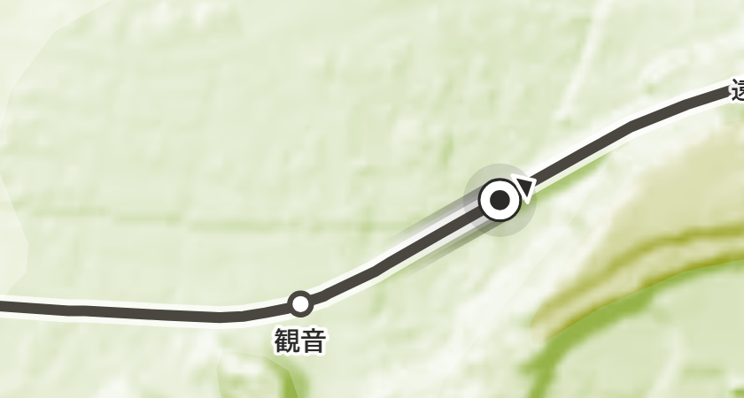
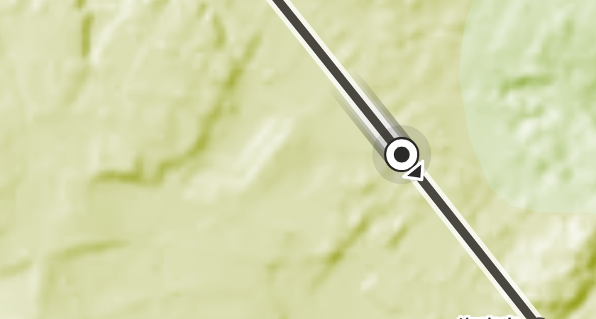
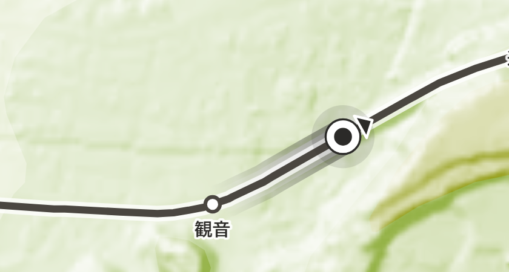
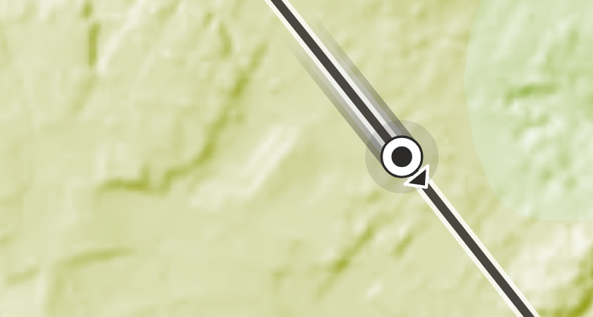
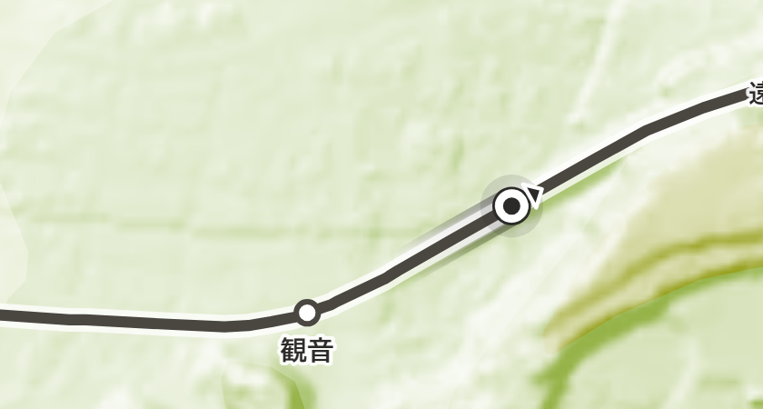
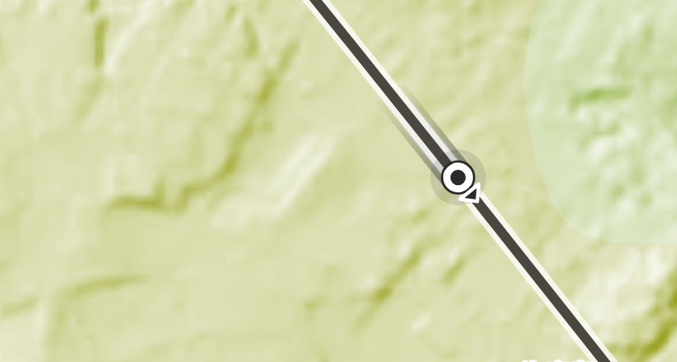

「円がちょっとでかい、尾も長い」との指摘を受けて、寸法を一段小さくしたもの。
すべて本物の index.html を偽の GPS で走らせて撮った。左が淡い地形（観音）、右が濃い地形（台地）。
比べる相手として、駅の印（小さな白丸・画面上 7px）が同じ絵の中に写っている。


尾が観音の駅を越えて伸びていた。印も駅より一回り以上大きかった。


まだ足りなければこちら。ただし矢印が小さくなり、向きの読み取りが弱くなる。


| 部品 | A 前 | B 新（採用） | C 小 |
|---|---|---|---|
| 芯（半径／白フチ） | 12 / 7 | 9.5 / 6 | 8 / 5 |
| 外の墨の縁（半径／太さ） | 16.5 / 2 | 13.5 / 1.8 | 11.5 / 1.6 |
| にじみ（半径） | 30 | 24 | 20 |
| 矢印（先端／底辺／幅） | 32 / 19 / 12 | 26 / 15 / 10 | 22 / 13 / 8.5 |
| 波紋（開始→終了） | 15 → 42 | 13 → 34 | 11 → 29 |
| 尾の長さ | 180m | 110m | 70m |
| 尾の太さ（白／墨） | 24 / 34 | 20 / 28 | 17 / 24 |
印は駅の白丸（7px）より確実に大きいことだけは守る。同じくらいになると、 「駅にいるのか自分がいるのか」が読めなくなる。C はその下限に近い。
この 3 枚は走行中の姿だけを比べたもの。
縮めたあと .here--off（線路から離れている）で破線が歯車に見える不具合が出た。
太さと刻みを持つ状態は、半径を掛け算するだけでは済まない
─ 顛末は mockup-decision-現在位置.md に書いた。